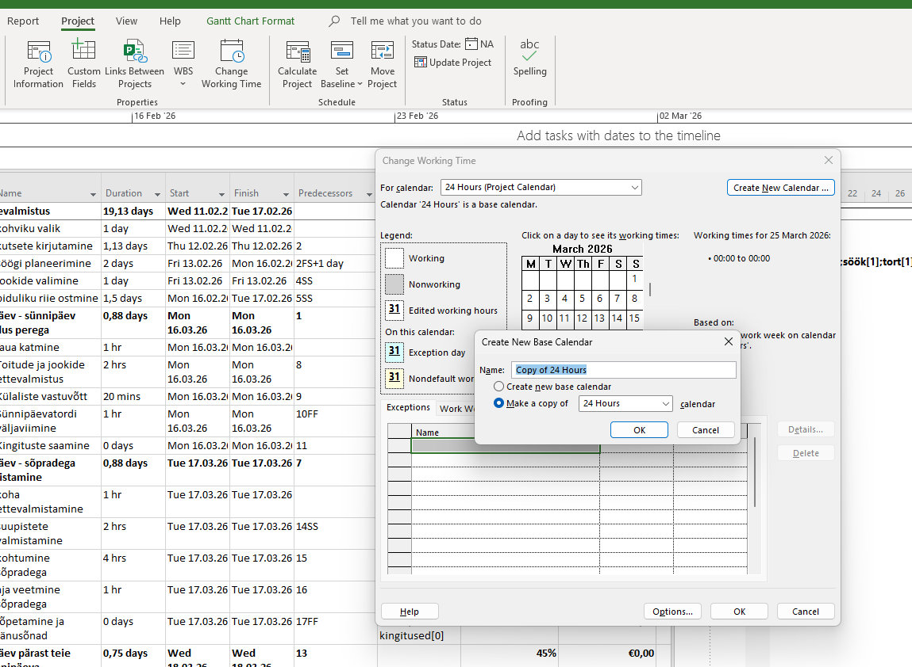
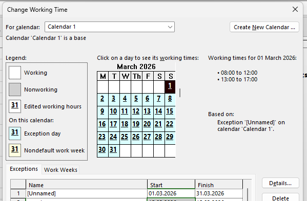
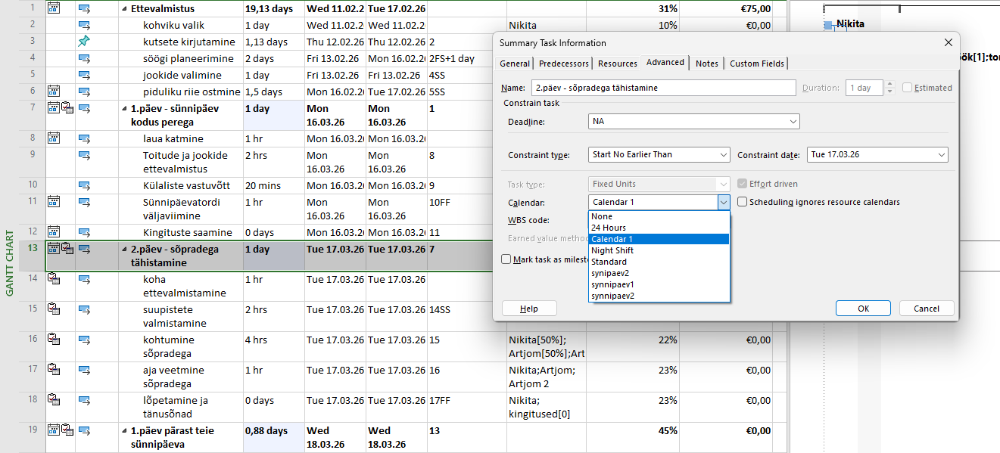
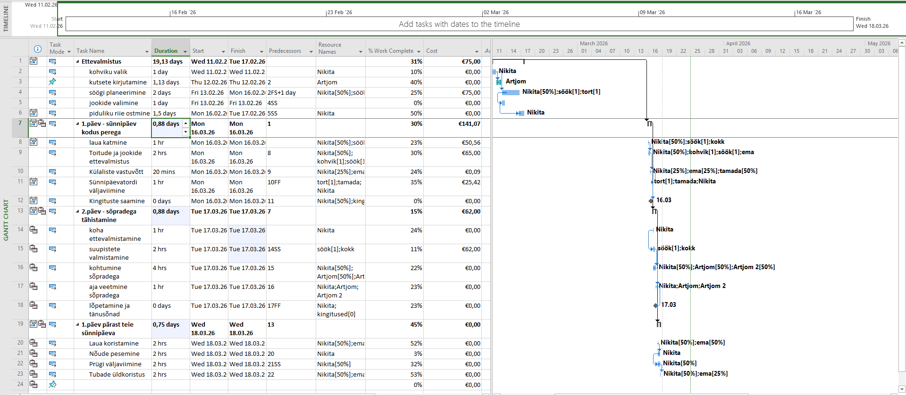

01
Uue kalendri loomine
Ava vahekaart Project ja vali Change Working Time. Klõpsa Create New Calendar, anna sellele nimi ning vali aluseks Standard.

02
Tööaja ja erandite seadistamine
Vahekaardil Work Weeks saad määrata töögraafiku (nt E–R). Vahekaardil Exceptions lisa pühad, mil tööd ei tehta.

03
Kalendri rakendamine projektile
Ava Project Information ja vali väljal Calendar just loodud kalender. Nüüd arvestab projekt sinu töögraafikuga.

Mõju projekti ajakavale
Kalender mõjutab otseselt ülesannete kestust. Kui lisad vaba päeva (Exception), nihutab MS Project kõik ülesanded automaatselt järgmisele tööpäevale — projekti lõppkuupäev muutub vastavalt.
